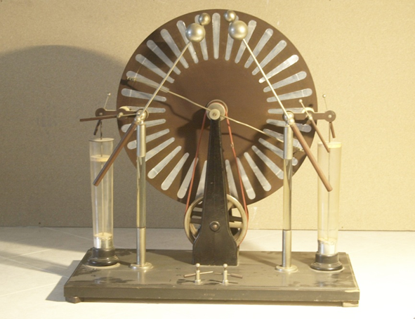

Macchina di Wimshurst
Scuola di provenienza: Istituto agrario "F. De Sanctis", Avellino
Settore: Elettrostatica
Costruttori: Sconosciuto
Materiali: Legno, ottone, vetro
Accessori: Nessuno
Stato di conservazione: Ruggine nelle parti in ferro, legno con tarme, settori staccati dal disco, spazzole consumate
Descrizione: La macchina è montata su di una base di legno. I dischi controrotanti di bachelite con settori di stagnola sono sostenuti da un asse imperniato in un doppio sostegno di ghisa verniciata. Due collettori diametrali di ottone nichelato, muniti di spazzole, sono fissati a ghiere infilate sull´asse. Una manovella e due pulegge, imperniate nel sostegno, azionano i dischi tramite una coppia di cinghie di trasmissione. Due colonnine di vetro, infilate in ghiere di ottone nichelato sostengono le spazzole che fungono da collettori e gli elettrodi terminali della macchina. Questi ultimi sono girevoli e sono formati da asticelle di ottone nichelato con manico di ebanite sormontate da una coppia di sfere di diametro diverso. Due bracci di ebanite, fissati alle colonnine, recano due conduttori pure con manico di ebanite. Uno di essi permette di collegare le spazzole con gli elettrodi, l´altro a collegare questi ultimi con i conduttori delle bottiglie di Leyda inserite in una coppia di zoccoli fissati sulla base. Le armature esterne delle bottiglie sono collegate a due serrafili posti sulla base della macchina nei quali sono infilati due elettrodi che possono essere posti in contatto o allontanati.